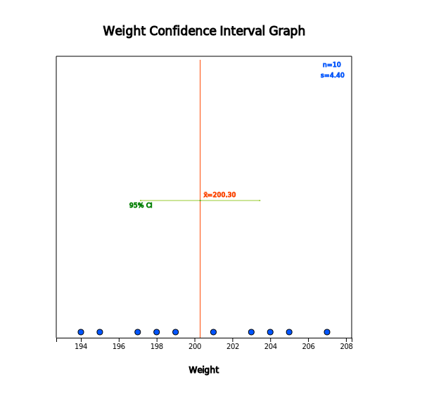
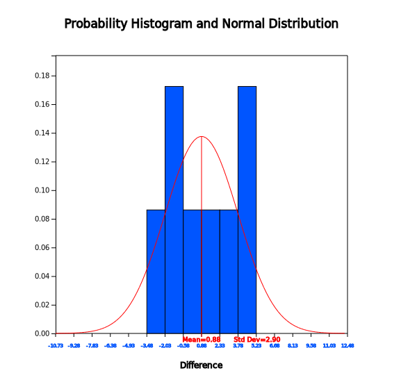
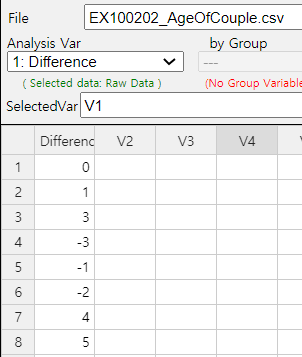
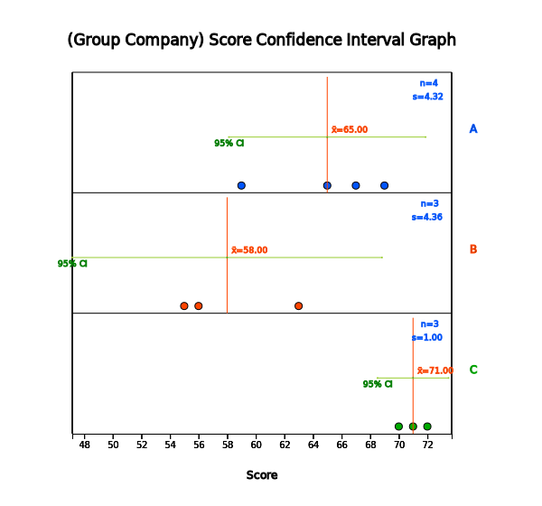

The hypothesis tests from Chapters 7 through 9 are based on assumptions such that the populations of continuous data follow the normal distributions. However, in real-world data, such assumptions may not be satisfied.
This chapter introduces the nonparametric methods for testing hypothesis by converting data such as rankings which do not require assumptions on the population distribution.
Section 10.1 introduces tests for the location parameter of single population such as the Sign Test and Signed Rank Test.
Section 10.2 introduces tests for comparing location parameters of two populations such as the Wilcoxon Rank Sum Test.
Section 10.3 introduces tests for comparing location parameter of several populations such as the Kruskal-Wallis Test and Friedman Test.
10.1 Nonparametric Test for Location of Single Population
The hypothesis test for a population mean in Chapter 7 can be done using t distribution in the case of a
small sample if the population is assumed as a normal distribution. As such, if we make some assumptions about a
population distribution and test a population parameter using sample data, it is called a parametric test. The
hypothesis tests for two population parameters in Chapter 8 and the analysis of variances in Chapter 9 are also
parametric tests, because they assume that populations are normal distributions.
However, real world data may not be appropriate to assume that a population follows a normal distribution,
or there may not be enough number of samples to assume a normal distribution. In some cases, data collected are
not continuous or can be ordinal such as rank, then the parametric tests are not appropriate. In such cases,
methods to test population parameters by converting the data into signs or ranks without assuming on population
distributions are called the distribution-free or nonparametric tests.
Since the nonparametric test utilizes the converted data such as signs or ranks, there may be some loss of
information about the data. Therefore, if a population can be assumed as a normal distribution, there is no
reason to use the nonparametric tests. In fact, when a population follows a normal distribution, a nonparametric
test has a higher probability of the type 2 error at the same significance level. However, a nonparametric test
would be more appropriate if the data are from a population that do not follow a normal distribution.
The hypothesis test for a population mean in Chapter 7 is based on the theory of the central limit theorem
for the sampling distribution of all possible sample means. However, the nonparametric test use signs by
examining whether data values are small or large from the central location parameter of the population (the Sign
Test of 10.1.1), or use ranks by calculating the ranking of the data (the Wilcoxon Signed Rank Test of Section
10.1.2). Here, the central location parameter can be the population mean or the population median, but usually
referring to the population median that is not affected by an extreme point of the data.
Estimation of a population parameter can also be made by using a nonparametric method, but this chapter
only introduces nonparametric hypothesis tests. Those interested in the nonparametric estimation should refer to
the relevant literature.
10.1.1 Sign Test
Let's take a look at the sign test with the following examples.
Example 10.1.1
A bag of cookies is marked with a weight of 200g. Ten bags are randomly selected from several
retailers and examined their weights as follows. Can you say that there are as many cookies
in the bag as the weight marked?
203 204 197 195 201 205 198 199 194 207
[Ex] ⇨ eBook ⇨ EX100101_CookieWeight.csv
1) Draw a histogram of the data to check whether a testing hypothesis using a parametric method
can be performed.
2) Test the hypothesis by using a nonparametric method which utilizes the sign data by examining
whether data values are smaller or larger than 200 with the significance level of 5%.
3) Check the result of the above test using 『eStatU』.
Answer
1) The null and alternative hypothesis to test the population mean can be written as follows:
In order to test the hypothesis using the parametric t-test in Chapter 7, it is necessary
to assume that the population is normally distributed, because the sample size of 10 is small.
Let us check whether the sample data is a normal distribution by using a histogram.
Enter data in 『eStat』 as shown in <Figure 10.1.1>
<Figure 10.1.1> Data input for cookie weight
Click icon of the testing hypothesis for the population mean and select ‘Weight’
as the analysis variable in the variable selection box. A dot graph with the 95% confidence
interval will appear as <Figure 10.1.2>. If you click the [Histogram] button in the options
window below the graph, a histogram as shown in <Figure 10.1.3> will appear.
If you look at the histogram, it is not sufficient to assume that the population follows
a normal distribution. In such cases, applying the parametric hypothesis test may lead to errors.

<Figure 10.1.2> Dot graph of the cookie weight
<Figure 10.1.3> Histogram of the cookie weight
2) In this case, the sample data can be converted to sign data only by examining
whether the weight of cookie bag is greater than 200g (+ marked) or not (- marked).
sample data
sign data
203
+
204
+
197
-
195
-
201
+
205
+
198
-
199
-
194
-
207
+
If the number of + signs and – signs are similar, the weight of cookie bag would be 200g
approximately. If the number of + signs is larger than – signs, then the weight of cookie bag
is greater than 200g. If the number of – signs is larger than + signs, then the weight of cookie bag
is less than 200g.
Since the above sign data only investigate whether a data is larger or smaller than 200 and
never use a concept of the mean, it can be considered as testing for the population median
(\(\small M\)) as follows:
\(\quad \small \quad H_0 : M = 200 ,\;\; H_1 : M \ne 200\):
In the sign data above, ‘the number of + signs’ (denote it as \(n_+\)) or the number of – signs’
(denote as \(n_-\)) follows a binomial distribution with parameters of \(n\)=10, \(p\)=0.5 (<Figure 10.1.4>).
<Figure 10.1.4> Binomial distribution when =10, =0.5
Therefore, if \(\small H_0\) is correct, the number of + signs may be the most likely to be 4 or 5 or 6 and
0, 1 or 9, 10 are very unlikely to be present. In order to test \(\small H_0 : M\) = 200 with
5% significance level, since it is a two-sided test, rejection region should have the 2.5%
probability at both ends of the binomial distribution, so it is approximately as follows:
'If the number of + signs (\(n_+\)) is either 0, 1 (cumulated probability from left is
0.011) or 9, 10 (cumulated probability from right is 0.011), then reject \(\small H_0\).'
This rejection region has a total probability of 2*0.011 = 0.022 which is smaller than
the significance level of 0.05. When we use a discrete distribution such as binomial distribution,
it may be difficult to find a rejection region which is exactly the same as the significance level.
If we include one more value in the rejection region, the decision rule is as follows:
'If the number of + signs (\(n_+\)) is either 0, 1, 2 (cumulated probability from left is
0.055) or 8, 9, 10 (cumulated probability from right is 0.055), then reject \(\small H_0\).'
This rejection region has a total probability of 2*0.055 = 0.110 which is greater
than the significance leve of 0.05. Therefore, the middle values 1.5 (of 1 and 2) and
8.5 (of 8 and 9) can be used in the decision rule as follows:
'If the number of + signs \(n_+\) < 1.5 or \(n_+\) > 8.5, then reject \(\small H_0\).'
This method may also be approximate. In the case of testing using a discrete distribution,
it is not possible to say 'what is right' among the above decision rules and the analyst
should select the critical value near the significance level. In this example, the number
of + signs (\(n_+\)) is 5 and you cannot reject the null hypothesis. In other words, the median
of the weight of the cookie bag is 200g.
3) Enter data as shown in <Figure 10.1.5> in 『eStatU』 and press the [Execute] button
to show the test result as in <Figure 10.1.6>. It shows the critical lines for values
containing the significance level of 5% (2.5% for both tests). For a discrete distribution
such as the binomial distribution, the choice of the final reject region shall be determined
by the analyst.
[]
<Figure 10.1.6> Result of sign test using 『eStatU』
Practice 10.1.1
A psychologist has selected 9 handicap workers randomly from production workers employed at various factories
in a large industrial complex and their work competency scores are examined as follows. The psychologist wants
to test whether the population median score is 40. Assume the population distribution is symmetrical about the mean.
32, 52, 21, 39, 23, 55, 36, 27, 37
[Ex] ⇨ eBook ⇨ PR100101_CompetencyScore.csv
1) Check whether a parametric test is possible.
2) Apply the sign test with the significance level of 5%.
When the population median is \(M\), the sign test is used to test whether \(M = M_0\) or \(M \gt M_0\)
(or \(M \lt M_0\), or \(M \ne M_0\)). However, if the population distribution is symmetrical to
the mean, the sign test is the same as the test of the population mean, because mean and median
are the same in this case.
When there are \(n\) number of samples, the test statistic for the sign test uses the number of data
which are greater than \(M_0\) which is denoted \(n_+\). The sign test uses the random variable of ‘the number of
+ signs (\(n_+\))’ which follows a binomial distribution with parameters \(n\) and \(p\)=0,5,
i.e., \(B(n,0.5)\) when the null hypothesis is true. You can use the number of data
which are less than \(M_0\), i.e., \(n_- = n - n_+\) and \(n_-\) also follows a binomial distribution \(B(n,0.5)\).
Let us use \(n_+\) in this section. \(B(n,0.5)_{\alpha}\) represents the 100\(\times \alpha\)
right tail percentile, but the accurate percentile value may not exist, because it is a discrete distribution. In
this case, middle value of two nearest percentile is often used. Table 10.1.1 summarizes the decision rule for
each type of hypothesis of the sign test.
Table 10.1.1 Decision rule of the sign test
Type of Hypothesis
Decision Rule Test Statistic \(n_{+}\)= 'number of plus sign data'
1) \( \; H_0 : M = M_0 \) \(\quad\,\, H_1 : M > M_0 \)
If \( n_{+} > B(n, 0.5)_{α} \), then reject \( H_0 \)
2) \( \; H_0 : M = M_0 \) \(\quad\,\, H_1 : M < M_0 \)
If \( n_{+} < B(n, 0.5)_{1-α} \), then reject \( H_0 \)
3) \( \; H_0 : M = M_0 \) \(\quad\,\, H_1 : M \ne M_0 \)
If \( n_{+} < B(n, 0.5)_{1-α/2} \quad or\quad n_{+} > B(n, 0.5)_{α/2} \), then reject \( H_0 \)
☞ If the observed value is the same as \(M_0\)?
If any of the observations has the same value as \(M_0\), they are not used in the sign test.
In other words, reduce \(n\).
As studied in Chapter 5, the binomial distribution \(B(n,0.5)\) can be approximated by the normal
distribution \(N(0.5n,0.5^2 n)\) if \(n\) is sufficiently large. Therefore, if the sample size
is large, the test statistic \(n_+\) = 'the number of plus sign data' can be tested using the normal
distribution \(N(0.5n,0.5^2 n)\). Table 10.1.2 summarizes the decision rule for each hypothesis of
the sign test in the case of large samples.
Table 10.1.2 Decision rule of the sign test (large sample case)
Type of Hypothesis
Decision Rule Test Statistic \(n_{+}\)= 'number of plus sign data'
1) \( \; H_0 : M = M_0 \) \(\quad\,\, H_1 : M > M_0 \)
If \( \frac{n_{+} -0.5n}{\sqrt{0.25n}} > z_{α} \), then reject \( H_0 \)
2) \( \; H_0 : M = M_0 \) \(\quad\,\, H_1 : M < M_0 \)
If \( \frac{n_{+} -0.5n}{\sqrt{0.25n}} < z_{1-α} \), then reject \( H_0 \)
3) \( \; H_0 : M = M_0 \) \(\quad\,\, H_1 : M \ne M_0 \)
If \( \left | \frac{n_{+} -0.5n}{\sqrt{0.25n}} \right| > z_{α/2} \), then reject \( H_0 \)
The sign test described in the previous section converted sample data to either + or - symbols
by examining whether the data were larger or smaller than the medium \(M_0\). In this case,
most of the information that the original sample data have is lost. In order to apply the
Wilcoxon signed rank test, we subtract \(M_0\) first from the sample data and take the absolute
value of this data. Assign ranks on these absolute values and calculate the sum of the
larger ranks than \(M_0\) and the sum of the smaller ranks than \(M_0\). If two rank sums are similar,
we conclude that the population median is equal to \(M_0\). This signed rank sum test is the most
widely used nonparametric method for testing the central location parameter of a population.
This test takes into account not only whether the sample data are larger or smaller than \(M_0\),
but also the relative size of the sample data from \(M_0\).
Example 10.1.2
Using the cookie weight data of [Example 10.1.1], apply the signed rank test to see
whether the weight of the cookie bag is 200g or not with the significance level of 5%
203 204 197 195 201 205 198 199 194 207
[Ex] ⇨ eBook ⇨ EX100101_CookieWeight.csv
Check the result of the signed rank test using 『eStatU』.
Answer
The hypothesis for this problem is to test whether the population median(\(\small M\)) is 200g or not.
\(\quad \small H_0 : M = 200, \quad \quad H_1 : M \ne 200 \)
The signed rank sum test examines not only checking the sample data are greater than
\(\small M_0\) = 200g (+ sign) or not (- sign), but also checking the rank of values of |data – 200|.
If there are tied values, assign the average rank to each of tied values.
For example, since there are two tied values of ‘1’ which is the smallest among |data – 200|,
the corresponding ranks of 1 and 2 are averaged which is 1.5 and assign the averaged rank to each
of value ‘1’.
Sample data
203
204
197
195
201
205
198
199
194
207
Sign data
+
+
-
-
+
+
-
-
-
+
|data – 200|
3
4
3
5
1
5
2
1
6
7
Rank of |data – 200|
4.5
6
4.5
7.5
1.5
7.5
3
1.5
9
10
Rank sum of ‘+’ sign (\(R_{+}\))
4.5 + 6 + 1.5 + 7.5 + 10 = 29.5
The sum of all ranks is 1 + 2 + \(\cdots\) + 10 = \(\frac{10(10+1)}{2} \) = 55. If the rank sum
of + sign data (\(\small R_{+}\)) and the rank sum of – sign data (\(\small R_-\))
are similar (approximately 27.5 or so), the null hypothesis \(\small H_0 : M\) = 200g would be true.
In this example, \(\small R_{+}\) = 29.5 and \(\small R_-\) = 25.5. Since
\(\small R_{+}\) is greater than \(\small R_{-}\), the weight data which are
greater than 200g appears to be dominant. What kind of large difference is statistically significant?
To investigate how large a value is statistically significant when the null hypothesis is true,
the sampling distribution of random variable \(\small R_{+}\) = 'rank sum of + sign
data' (or \(\small R_-\) = 'rank sum of – sign data') should be known. If \(\small H_0\) is true,
the number of cases for \(\small R_{+}\) is shown in Table 10.1.3.
It is not easy to examine all of these possible rankings to create a distribution table.
『eStatU』 shows the distribution of Wilcoxon signed rank sum as shown in <Figure 10.1.7> and
its table as in Table 10.1.4.
Table 10.1.3 All possible cases of \(\small R_{+}\) = 'rank sum of + sign data'
<Figure 10.1.7> Distribution of Wilcoxon signed rank sum when \(n\)=10
Table 10.1.4 Distribution of Wilcoxon signed rank sum when \(n\) = 10
Wilcoxon Signed Rank Sum Distribution
n = 10
\(x\)
\(P(X = x)\)
\(P(X \le x)\)
\(P(X \ge x)\)
0
0.0010
0.0010
1.0000
1
0.0010
0.0020
0.9990
2
0.0010
0.0029
0.9980
3
0.0020
0.0049
0.9971
4
0.0020
0.0068
0.9951
5
0.0029
0.0098
0.9932
6
0.0039
0.0137
0.9902
7
0.0049
0.0186
0.9863
8
0.0059
0.0244
0.9814
9
0.0078
0.0322
0.9756
\(\cdots\)
\(\cdots\)
\(\cdots\)
\(\cdots\)
47
0.0059
0.9814
0.0244
48
0.0049
0.9863
0.0186
49
0.0039
0.9902
0.0137
50
0.0029
0.9932
0.0098
51
0.0020
0.9951
0.0068
52
0.0020
0.9971
0.0049
53
0.0010
0.9980
0.0029
54
0.0010
0.9990
0.0020
55
0.0010
1.0000
0.0010
Since it is a two-sided test with the 5% significance level, if you find a 2.5% percentile at
both ends, \(P(X \le 8)\) = 0.0244, \(P(X \ge 47)\) = 0.0244. In case of a discrete distribution,
we cannot find the exact 2.5 percentile from both ends. Therefore, the decision rule can be written
as follows:
‘If \(\small R_+ \le\) 8.5 or \(\small R_+ \ge\) 46.5, then reject \(\small H_0\)’
Since \(\small R_+\) = 29.5 in this problem, we can not reject \(\small H_0\).
After entering the data in 『eStatU』 as shown in <Figure 10.1.8>, pressing the
[Execute] button will calculate the sample statistics and show the test result as
in <Figure 10.1.9>. The critical lines are the value for containing 5% significance level
from both sides (the probability of each end is 2.5%). For a discrete distribution,
the choice of the final reject region should be determined by the analyst.
[]
<Figure 10.1.9> Signed rank sum test in 『eStatU』
The signed rank sum test can be done using 『eStat』. If you enter the data as shown in
<Figure 10.1.10>, select 'Weight' as the analysis variable in the variable selection box
and click the icon of testing the population mean. Then a dot graph with the 95% confidence
interval for the population mean will appear as <Figure 10.1.11>.
<Figure 10.1.10> Data input for cookie weight
<Figure 10.1.11> Dot graph and confidence interval of cookie weight
Enter a value of 200 from the options below the graph and click the [Wilcoxon Signed Rank Sum Test]
button to display the same test result graph and result table as in <Figure 10.1.12>.
<Figure 10.1.12> Result of the Wilicoxon Signed Rank Sum Test
If we denote the population median as \(M\), the signed rank sum test is to test whether the
population median is \(M_0\) or greater than (or less than or not equal to) \(M_0\). However, if
the population distribution is symmetric about the mean, the signed rank sum test becomes to test
about the population mean because the population median and mean are the same. The basic
statistical model is as follows:
$$
X_i = M_0 + \epsilon_{i}, \quad i=1,2,...,n
$$
where \(\epsilon_i\)’s are independent, symmetric about the mean 0 and follow the same distribution.
If \(x_1 , x_2 , ... , x_n\) are sample data, ranks of \(|x_i - M_0|\) are calculated first and
the sum of ranks for the data which are greater than \(M_0\) (+ sign data of \(x_1 , x_2 , ... , x_n\)),
denoted as \(R_+\), is calculated. \(R_+\) is the test statistic for the signed rank sum test and
the sampling distribution of \(R_+\), denoted as \(w_{+}(n)\), is calculated for testing hypothesis
by considering all possible cases. 『eStatU』 provides \(w_{+}(n)\) until \(n\) = 22.
\(w_{+}(n)_{α}\) denotes right tail 100\(\times α\) percentile of the \(w_{+}(n)\)
distribution, but it is not easy to find the exact percentile, because \(w_{+}(n)\) is a discrete
distribution and is usually used to approximate the two adjacent values. Table 10.1.5 summarizes
the decision rule for the Wilcoxon signed rank sum test for each type of hypothesis.
Table 10.1.5 Decision rule of Wilcoxon signed rank sum test
Type of Hypothesis
Decision Rule Test Statistic \(R_{+}\)= 'Rank sum of + sign data of \(|x_{i} – M_{0} |\)
1) \( \; H_0 : M = M_0 \) \(\quad\,\, H_1 : M > M_0 \)
If \( R_{+} > w_{+}(n)_{α} \), then reject \( H_0 \)
2) \( \; H_0 : M = M_0 \) \(\quad\,\, H_1 : M < M_0 \)
If \( R_{+} < w_{+}(n)_{1-α} \), then reject \( H_0 \)
3) \( \; H_0 : M = M_0 \) \(\quad\,\, H_1 : M \ne M_0 \)
If \( R_{+} < w_{+}(n)_{1-α/2} \quad or\quad R_{+} > w_{+}(n)_{α/2} \), then reject \( H_0 \)
☞ If the observed value is the same as \(M_0\)?
If any of the observed values has the same value as , they are not used in the test.
In other words, reduce \(n\).
Practice 10.1.2
A psychologist has selected 9 handicap workers randomly from production workers employed at various factories
in a large industrial complex and their work competency scores are examined as follows. The psychologist wants
to test whether the population median score is 45. Assume the population distribution is symmetrical about the mean.
32, 52, 21, 39, 23, 55, 36, 27, 37
[Ex] ⇨ eBook ⇨ PR100101_CompetencyScore.csv
1) Check whether a parametric test is possible.
2) Apply the Wilcoxon signed rank test with the significance level of 5%.
) Compare this test result with the sign test of [Practice 10.1.1].
If the sample size is large enough, the test statistic \(R_+\) is approximated to a normal
distribution with the following mean \(E(R_{+})\) and variance \(V(R_{+})\) when the null
hypothesis is true.
$$
\begin{align}
E(R_+ ) &= \frac {n(n+1)}{4} \\
V(R_+ ) &= \frac {n(n+1)(2n+1)} {24}
\end{align}
$$
Table 10.1.6 summarizes the decision rule of the signed rank sum test for each type of hypothesis.
Table 10.1.6 Decision rule of Wilcoxon signed rank sum test (large sample case)
Type of Hypothesis
Decision Rule Test Statistic \(R_{+}\)= 'Rank sum of + sign data of \(|x_{i} – M_{0} |\)
1) \( \; H_0 : M = M_0 \) \(\quad\,\, H_1 : M > M_0 \)
If \( \frac{R_{+} - E(R_{+})}{\sqrt{V(R_{+})}} > z_{α} \), then reject \( H_0 \)
2) \( \; H_0 : M = M_0 \) \(\quad\,\, H_1 : M < M_0 \)
If \( \frac{R_{+} - E(R_{+})}{\sqrt{V(R_{+})}} < z_{1-α} \), then reject \( H_0 \)
3) \( \; H_0 : M = M_0 \) \(\quad\,\, H_1 : M \ne M_0 \)
If \( \left | \frac{R_{+} - E(R_{+})}{\sqrt{V(R_{+})}} \right | > z_{α/2} \), then reject \( H_0 \)
The distribution of \(w_{+}(n)\) is independent of the population distribution. In other words,
the Wilcoxon signed rank sum test is a distribution free test. For example, if \(n\) = 3, the distribution
of \(w_{+}(3)\) can be obtained as follows:
Rank 1
Rank 2
Rank 3
Possible value of \(R_{+}\)
-
-
-
0
+
-
-
1
-
+
-
2
-
-
+
3
+
+
-
3
+
-
+
4
-
+
+
5
+
+
+
6
Therefore, the distribution of \(w_{+}(3)\) can be calculated as follows which is independent of the
population distribution.
\(R_{+} = x\)
\(P(R_{+} = x)\)
0
\(\frac{1}{8}\)
1
\(\frac{1}{8}\)
2
\(\frac{1}{8}\)
3
\(\frac{2}{8}\)
4
\(\frac{1}{8}\)
5
\(\frac{1}{8}\)
6
\(\frac{1}{8}\)
If there is a tie on the value of \(|x_i - M_0|\), the average rank is calculated when the ranking
is obtained. In this case, the variance of \(R_+\) in case of large sample is calculated using the
following modified formula.
$$
V(R_+ ) = \frac{1}{24 } [n(n+1)(2n+1) - \frac{1}{2} \sum_{j=1}^{g} t_{j}(t_{j}-1)({t}_{j}+1) ]
$$
Here \(g\) = (number of groups of tie), \(t_j\) = (size of \(j^{th}\) tie group, i.e., number of
observations in the tie group). if there is no tie, size of \(j^{th}\) tie group is 1 and \(t_j\) = 1.
10.2 Nonparametric Test for Comparing Locations of Two Populations
The testing hypothesis for the two population means in Chapter 8 used the t-distribution in case of a small
sample, if each population could be assumed to be a normal distribution. However, the assumption that the
population follows a normal distribution may not be appropriate for real world data, or that there may not be
enough sample data to assume a normal distribution. Alternatively, if collected data is ordinal such as
ranking, then the parametric t-test is not appropriate. In such cases, a nonparametric method is used to test
parameters by converting data to ranks without assuming the distribution of the population. This section
introduces the Wilcoxon rank sum test.
Nonparametric tests convert data into ranks, so there may be some loss of information about the data.
Therefore, if data are normally distributed, there is no reason to apply a nonparametric test. However, a
nonparametric method would be a more appropriate method if the data do not follow a normal distribution.
As in Chapter 8, this section introduces nonparametric tests for testing location parameters of two
populations for the samples drawn independently from each population and for the samples drawn as paired.
10.2.1 Independent Samples: Wilcoxon Rank Sum Test
Let's take a look at the Wilcoxon rank sum test with the following example.
Example 10.2.1
A professor teaches Statistics courses to students in the Department of Economics
and the Department of Management. In order to compare exam scores of students in the two departments,
seven students were randomly sampled from the Economics Department and six students from the Management Department and their scores were as follows:
Department of Economics 87 75 65 95 90 81 93
Department of Management 57 85 90 83 87 71
[Ex] ⇨ eBook ⇨ EX100201_ScoreByDepartment.csv
1) Draw a histogram of the data to verify that the testing hypothesis can be performed using a parametric method.
2) Apply the Wilcoxon rank sum test with the significance level of 5%.
3) Check the result of the Wilcoxon rank sum test using 『eStat』.
Answer
1) The hypothesis of this problem to test two population means and are as follows:
Since the sample sizes, \(n_1\) = 7 and \(n_2\) = 6, are small from each population,
it is necessary to assume that the populations are normally distributed in order
to apply the parametric \(t\)-test. In order to check whether each sample data follows
a normal distribution, let us draw a histogram using 『eStat』. Enter data in 『eStat』
as shown in <Figure 10.2.1>.
<Figure 10.2.1> Data input at 『eStat』
Click icon for testing two population means in the main menu. Select ‘Score’ as 'Analysis Var'
and ‘Dept’ as ‘By Group’ variable. Then, two dot graphs together with 95% confidence intervals
for each population mean will appear as in <Figure 10.2.2>. Average score of students in
the Economics Department appears to be higher than the average score of students in the Management
Department, but it should be tested for statistical significance. Pressing the [Histogram] button
in the options window below the graph will reveal the histogram and normal distribution curves
for each department as in<Figure 10.2.3>.
<Figure 10.2.2> Dot graph and confidence interval by department
<Figure 10.2.3> Histogram by department
2) Looking at the histogram, the small number of data is not sufficient to assume that the population
follows a normal distribution. In such case, applying the parametric t-test may lead to error.
In case of a nonparametric test, we test the location parameter of the population such as median
which is not so sensitive to extreme values. The hypothesis for this problem is to test whether
the median values \(\small M_1\) and \(\small M_2\) of the two populations are equal or not as follows:
The Wilcoxon rank sum test calculates ranks of each data by combining two samples first and
then calculate the sum of ranks in each sample. If there is a tie, then the averaged rank shall be used. To obtain the ranks of the combined sample, it is convenient to arrange each sample data in ascending
order as shown in Table 10.2.1. The sum of ranks \(\small R_1\) and \(\small R_2\) in each sample will
be used as the test statistic for the Wilcoxon rank sum test.
Table 10.2.1 A table to calculate ranks in a combined sample
Sorted Data of Sample 1
Sorted Data of Sample 2
Ranks of Sample 1
Ranks of Sample 2
57
1
65
2
71
3
75
4
81
5
83
6
85
7
87
87
8.5
8.5
90
90
10.5
10.5
93
12
95
13
Sum of ranks
\(\small R_{1}=55\)
\(\small R_{2}=36\)
The sum of all ranks is 1 + 2 + \(\cdots\) + 13 = \(\frac{13(13+1)}{2}\) = 91. The sum of ranks
in sample 1 is \(\small R_{1}\) = 55 and the sum of ranks in sample 2 is \(\small R_{2}\) = 36.
Note that \(\small R_{1}\) + \(\small R_{2}\) = 91. If \(\small R_{1}\) and \(\small R_{2}\) are similar,
the null hypothesis that two population medians are the same is accepted. In this example
\(\small R_{1}\) is larger than \(\small R_{2}\) and it seems the median of the population 1 is larger
than the median of the population 2. But how much difference in the rank sum would be statistically
significant if you consider the sample sizes?
To investigate how large a difference in the rank sum is statistically significant when the null
hypothesis is true, the sampling distribution of the random variable \(\small R_{2}\) = 'Rank sum of sample 2'
(or \(\small R_{1}\) = 'Rank sum of sample 1') should be known. If \(\small H_0\) is true, the number of cases
for \(\small R_{2}\) is \({}_{13}P_{6}\) = 1716 as shown in Table 10.2.2. It is not easy to examine all of these possible
rankings to find the distribution table. 『eStatU』 provides the Wilcoxon rank sum distribution and its table as shown in <Figure 10.2.4>.
Table 10.2.2 All possible ranks for six data in sample 2 if n = 13
All possible permutation of ranks
Sum of ranks, \(R_{2}\)
{1,2,3,4,5,6}
21
{1,2,3,4,5,7}
22
\(\quad \cdots\)
\(\cdots\)
{8,9,10,11,12,13}
63
<Figure 10.2.4> Wilcoxon rank sum distribution when =7, =6
Table 10.2.3 Wilcoxon rank sum distribution when \(n_1 = 7, n_2 = 6\)
Wilcoxon Rank Sum Distribution
n = 10
\(x\)
\(P(X = x)\)
\(P(X \le x)\)
\(P(X \ge x)\)
21
0.0006
0.0006
1
22
0.0006
0.0012
0.9994
23
0.0012
0.0023
0.9988
24
0.0017
0.0041
0.9977
25
0.0029
0.007
0.9959
26
0.0041
0.0111
0.993
27
0.0064
0.0175
0.9889
28
0.0082
0.0256
0.9825
29
0.0111
0.0367
0.9744
\(\cdots\)
\(\cdots\)
\(\cdots\)
\(\cdots\)
55
0.0111
0.9744
0.0367
56
0.0082
0.9825
0.0256
57
0.0064
0.9889
0.0175
58
0.0041
0.993
0.0111
59
0.0029
0.9959
0.007
60
0.0017
0.9977
0.0041
61
0.0012
0.9988
0.0023
62
0.0006
0.9994
0.0012
63
0.0006
1
0.0006
Since the hypothesis requires a two sided test with the significance level of 5%,
so if you find a 2.5 percentile at both ends, \(\small P(X \le 28) = 0.0256, P(X \ge 56)\) = 0.0256.
Since it is a discrete distribution, there is no exact value of the 2.5 percentile.
Therefore, the decision rule can be set as follows:
\(\quad \small \)‘If \(\small R_2 \le\) 27.5 or \(\small R_2 \ge\) 56.5, then reject \(\small H_0 \)’
In this problem \(\small R_2\) = 36, and therefore, we cannot reject \(\small H_0\) which means
the difference between \(\small R_1\) and \(\small R_2\) is not statistically significant.
3) In 『eStatU』, enter the data as shown in <Figure 10.2.5> and click the [Execute] button.
It will calculate the sample statistics and show the test result graph as <Figure 10.2.6>.
The two critical lines which correspond to 2.5% from the end are shown here. For a discrete
distribution such as this, the choice of the final rejection region should be determined
by the analyst.
[]
<Figure 10.2.6> Wilcoxon rank sum test using 『eStatU』
The rank sum test can be performed using 『eStat』. After you saw <Figure 10.2.2>,
click the [Wilcoxon Rank Sum Test] button in the options window below the graph.
Then a test result graph as shown in <Figure 10.2.6> will appear in the Graph Area
and a test result table as in <Figure 10.2.7> will appear in the Log Area.
<Figure 10.2.7> Result table of Wilcoxon rank sum test
Let's generalize the Wilcoxon rank sum test described in [Example 10.2.1]. Denote random samples selected
independently from each of the two populations as follows. The sample sizes are \(n_1\) and \(n_2\)
respectively, and \(n = n_1 + n_2\).
For convenience, assume \(n_1 \ge n_2\). If \(n_1 < n_2\), you can swap between \(X\) and \(Y\) .
The statistical model of the Wilcoxon rank sum test is as follows:
$$
\begin{align}
X_i &= M_1 + \epsilon_i & i=1,2, ... , n_i\\
Y_j &= M_1 + \Delta + \epsilon_j & j=1,2, ... , n_j \\
\end{align}
$$
\(Y_j\) can also be written as \(Y_j = M_2 + \epsilon_j\) where \(M_2 = M_1 +\Delta \).
Here \(\Delta\) is the difference between location parameters. \(\epsilon_i\)’s are independent and
follow the same continuous distribution which is symmetric around 0.
The test statistic for the Wilcoxon rank sum test is the sum of ranks, \(R_2\), for \(Y_1 , Y_2, ... , Y_{n_2}\)
based on the combined sample of \(X_1 , X_2, ... , X_{n_1}\),\(Y_1 , Y_2, ... , Y_{n_2}\). The distribution
of the random variable \(R_2\) = ‘Sum of the ranks for \(Y\) sample’ can be obtained by investigating
all possible cases of ranks for \(Y\) which is \({}_{n}P_{n_2}\) and is denoted as \(w_{2}(n_{1},n_{2})\).
『eStatU』 provides the Wilcoxon rank sum distribution \(w_{2}(n_{1},n_{2})\) and its table up to \(n\) = 25.
\(w_{2}(n_{1},n_{2})_{α}\) denotes the right tail 100\(\times α\) percentile, but it might not
be able to find the accurate percentile, because \(w_{2}(n_{1},n_{2})\) is a discrete distribution.
In this case, middle value of two percentiles near \(w_{2}(n_{1},n_{2})_{α}\) is often used as
an approximation. Table 10.2.4 summarizes the decision rule for each type of hypothesis.
Table 10.2.4 Wilcoxon rank sum test
Type of Hypothesis
Decision Rule Test Statistic \(R_{2}\)= 'Sum of ranks assigned samples of \(Y\)'
If \( R_{2} < w_{2}(n_1 , n_2)_{1-α/2} \quad or\quad R_{2} > w_{2}(n_1 , n_2)_{α/2} \), then reject \( H_0 \)
☞ If there is a tie in the combined sample, assign the average rank.
Practice 10.2.1
A company wants to compare two methods of obtaining information about a new product. Among company employees,
17 employees were randomly selected and divided into two groups. The first group learned about the new product
by the method A, and the second group learned by the method B. At the end of the experiment, the employees
took a test to measure their knowledge of the new product and their test scores are as follows:
Method A: 50 59 60 71 80 78 72 77 73
Method B: 52 54 58 78 65 61 60 72
[Ex] ⇨ eBook ⇨ PR100201_ScoreByMethod.csv
1) Can we apply a parametric test to conclude that population means of the two groups are different?
2) Apply a nonparmetric test to conclude that the median values of the two groups are different. Test with the significance level of 0.05.
When the null hypothesis is true, if the sample is large enough, the test statistic is approximated to the
normal distribution with the following mean \(E(R_2 )\) and variance \(V(R_2 )\):
$$
\begin{align}
E(R_2 ) &= \frac {n_2 (n_1 + n_2 +1 ) } {2} \\
V(R_2 ) &= \frac {n_1 n_2 (n_1 + n_2 +1)} {12}
\end{align}
$$
Table 10.2.5 summarizes the decision rule for each hypothesis type of the Wilcoxon rank sum test if the
sample is large enough.
Table 10.2.5 Wilcoxon rank sum test (large sample case)
Type of Hypothesis
Decision Rule Test Statistic \(R_{2}\)= 'Sum of ranks assigned samples of \(Y\)'
1) \( \; H_0 : M = M_0 \) \(\quad\,\, H_1 : M > M_0 \)
If \( \frac{ R_{2} - E(R_{2}) } {\sqrt{V(R_{2})}} > z_{α} \), then reject \( H_0 \)
2) \( \; H_0 : M = M_0 \) \(\quad\,\, H_1 : M < M_0 \)
If \( \frac{ R_{2} - E(R_{2}) } {\sqrt{V(R_{2})}} < z_{1-α} \), then reject \( H_0 \)
3) \( \; H_0 : M = M_0 \) \(\quad\,\, H_1 : M \ne M_0 \)
If \( | \frac{ R_{2} - E(R_{2}) } {\sqrt{V(R_{2})}} | > z_{α/2} \), then reject \( H_0 \)
The distribution of rank sum statistic, \(w_{2}(n_{1},n_{2})\), is not dependent on the population
distribution. That is, the rank sum test is a distribution free test. For example, if \(n_1\) = 3 and
\(n_2\) = 2, the distribution \(w_{2}(3, 2)\) can be found as follows. All possible cases of ranks for
\(R_2\) is \({}_{5}C_{2}\) = 10.
All possible ranks for combined sample
Value of \(R_2\)
\(X_1\)
\(X_2\)
\(X_3\)
\(Y_1\)
\(Y_2\)
3
4
5
1
2
3
2
4
5
1
3
4
2
3
5
1
4
5
2
3
4
1
5
6
1
4
5
2
3
5
1
3
5
2
4
6
1
3
4
2
5
7
1
2
5
3
4
7
1
2
4
3
5
8
1
2
3
4
5
9
Therefore, the distribution \(w_{2}(3, 2)\) is given regardless of the population distribution as follows:
\(R_{2} = x\)
\(P(R_{2} = x)\)
3
\(\frac{1}{10}\)
4
\(\frac{1}{10}\)
5
\(\frac{2}{10}\)
6
\(\frac{2}{10}\)
7
\(\frac{2}{10}\)
8
\(\frac{1}{10}\)
9
\(\frac{1}{10}\)
If there is a tie in the combined sample, the average rank is assigned to each data. In this case, the
variance of \(R_2\) should be modified in case of large sample as follows:
$$
V(R_2 ) = \frac{n_1 n_2} {12} \left[n_1 + n_2 + 1 - \frac{ \sum_{j=1}^{g} {t}_{j} ({t}_{j}-1)({t}_{j}+1) } {(n_1 + n_2 ) (n_1 + n_2 - 1) } \right]
$$
Here \(g\) = (number of tied groups), \(t_j\) = (size of \(j^{th}\) tie group, i.e., number of observations
in the tie group). If there is no tie, size of \(j^{th}\) tie group is 1 and \(t_j\) = 1.
10.2.2 Paired Samples: Wilcoxon Signed Rank Sum Test
Section 8.1.2 discussed the testing hypothesis for two population means using paired samples. Paired
samples are used when it is difficult to extract samples independently from two populations, or if independently
extracted, the characteristics of each sample object are so different that the resulting analysis is meaningless.
If two populations are normally distributed, the t-test was applied for the difference data of the paired samples
as described in Section 8.1.2. However, if the normality assumption of two populations can not be satisfied, the
Wilcoxon signed rank sum test in Section 10.1.2, which is a nonparametric test, can be applied to the difference
data of the paired samples.
In case of the paired samples, first calculate the differences (\(d_i = x_{i1} -x_{i2}\)) for each paired
sample as shown in Table 10.2.6. For the data of differences, we examine the normality to check whether
the parametric test can be applicable or not. If it is not applicable, we apply the Wilcoxon signed rank
sum test on the differences.
Table 10.2.6 Data of differences for paired samples
Pair number
Sample of population 1 \(x_{i1}\)
Sample of population 2 \(x_{i2}\)
Difference \(d_{i} = x_{i1} - x_{i2}\)
1
\(x_{11}\)
\(x_{12}\)
\(d_{1} = x_{11} - x_{12}\)
2
\(x_{21}\)
\(x_{22}\)
\(d_{2} = x_{21} - x_{22}\)
\(\cdots\)
\(\cdots\)
\(\cdots\)
\(\cdots\)
n
\(x_{n1}\)
\(x_{n2}\)
\(d_{n} = x_{n1} - x_{n2}\)
Let's take a look at the next example.
Example 10.2.2
The following is the survey result of eight samples from young couples. The husband’s age and wife’s age of each couple are recorded.
1) Calculate data of differences in each pair and draw their histogram to check whether a parametric test is applicable or not.
2) Apply the Wilcoxon signed rank sum test to see whether the husband’s age is greater than the wife’s age with the significance level of 0.05.
3) Check the result of the above signed rank sum test using 『eStat』.
Answer
1) The data of age differences between husband and wife are as follows:
Table 10.2.7 Data of age differences between husband and wife
Pair number
Husband Age \(x_{i1}\)
Wife Age \(x_{i2}\)
Difference \(d_{i} = x_{i1} - x_{i2}\)
1
28
28
0
2
30
29
1
3
34
31
3
4
29
32
-3
5
28
29
-1
6
31
33
-2
7
39
35
4
8
34
29
5
The histogram for the data of differences by using 『eStat』 (the testing hypothesis for
a population mean) is as in <Figure 10.2.8>. If you look at the histogram,
it is not sufficient evidence that the data of differences follow a normal distribution,
because the number of data is small. In such a case, applying the parametric hypothesis test
may lead to errors. An appropriate nonparametric method for this problem is the Wilcoxon
signed rank sum test on the data of differences.

<Figure 10.2.8> Histogram of age difference
2) The hypothesis to test is that the population median of the husband’s age (\(\small M_1\)) is the same
as the population median of the wife’s age (\(\small M_2\)) or not as follows:
Since it is a paired sample, the hypothesis can be written whether the population median of differences
(\(\small M_d \)) is equal to 0 or not as follows:
In order to apply the signed rank sum test on the data of differences, we count the number of
differences which is greater than 0 (denote as + sign) or not (denote as – sign) and assign ranks
on |difference – 0|. Then calculate the sum of ranks with + sign and the sum of ranks with – sign.
If the difference data is 0, omit the data. If there are ties on the difference data, assign
the average rank.
Difference data
1
3
-3
-1
-2
4
5
Sign data
+
+
-
-
-
+
+
| data – 0 |
1
3
3
1
2
4
5
Rank of | data – 0 |
1.5
4.5
4.5
1.5
3
6
7
Rank sum of ‘+’ sign ()
\(R_{+}\) = 1.5 + 4.5 + 6 + 7 = 19
In 『eStatU』, the distribution of the Wilcoxon signed rank sum when is shown in <Figure 10.2.9>
and Table 10.2.8.
Table 10.2.8 Wilcoxon signed rank sum distribution when \(n = 7\)
Wilcoxon Signed Rank Sum Distribution
\(n\) = 7
\(x\)
\(P(X = x)\)
\(P(X \le x)\)
\(P(X \ge x)\)
0
0.0078
0.0078
1.0000
1
0.0078
0.0156
0.9922
2
0.0078
0.0234
0.9844
3
0.0156
0.0391
0.9766
\(\cdots\)
\(\cdots\)
\(\cdots\)
\(\cdots\)
25
0.0156
0.9766
0.0391
26
0.0078
0.9844
0.0234
27
0.0078
0.9922
0.0156
28
0.0078
1.0000
0.0078
Since it is a two-sided test with the significance level of 5%, if a 2.5 percentile is found
at both ends, \(\small P(X \le 2) = 0.0234, P(X \ge 26) = 0.0234 \). Since it is a discrete distribution,
there is no exact value of the 2.5 percentile. Therefore, the decision rule is as follows:
Since \(\small R_+ \) = 19 in this problem, we can not reject the null hypothesis \(\small H_0\)
and conclude that the husband’s age and the wife’s age are the same.
3) Enter the data as shown in <Figure 10.2.9> in 『eStat』 and click the icon which is
the test for a population mean. If you select the variable ‘Difference’ as the analysis
variable, a dot graph with the 95% confidence interval for the population mean difference will
appear.
If you enter 0 for testing value in the hypothesis option and click the [Execute] button,
you will see the test result as in<Figure 10.2.10> and <Figure 10.2.11>.
Two critical lines for values containing 2.5 percentile from both sides are shown here.
For a discrete distribution, the choice of the final decision rule should be determined by the analyst.

<Figure 10.2.9> Data difference
<Figure 10.2.10> 『eStat』 Signed rank sum test
<Figure 10.2.11> Result of Wilcoxon signed rank sum test
The Wilcoxon signed rank test for the paired samples is to test whether the population median of the
differences between two populations, \(M_d\), is zero or not. If we denote the paired samples as
\((x_1 , y_1 ), (x_2 , y_2 ) , ... , (x_n , y_n )\), the Wilcoxon signed rank sum test calculate
the difference \(d_i = x_i - y_i\) first and assign ranks on \(|d_i|\). The sum of ranks of \(|d_i|\)
which has + sign of \(d_i\), \(R_+\), is used as the test statistic. 『eStatU』 provides the distribution
of \(R_+\), denoted as \(w_{+}(n)\), up to \(n\) = 22. \(w_{+}(n)_{α}\) refers to the
right tail 100 \(\times α\) percentile of this distribution which may not have an accurate
percentile value, because it is a discrete distribution. In this case the average of two values near
\(w_{+}(n)_{α}\) is used approximately. Table 10.2.9 summarizes the decision rule of the
Wilcoxon signed rank sum test for paired samples by the type of hypothesis.
Table 10.2.9 Wilcoxon signed rank sum test for paired samples
Type of Hypothesis
Decision Rule Test Statistic \(R_{+}\)= 'Sum of ranks on \(|d_{i} |\) with + sign
If \( R_{+} < w_{+}(n)_{1-α/2} \quad or\quad R_{+} > w_{+}(n)_{α/2} \), then reject \( H_0 \)
☞ If there is 0 on the differences of paired samples?
If there is 0 on the differences of paired samples, the data is omitted for further analysis.
That is, \(n\) is decreased.
Practice 10.2.2
An oil company has developed a gasoline additive that will improve the fuel mileage of gasoline.
We used 8 pairs of cars to compare the fuel mileage to see if it is actually improved.
Each pair of cars has the same details as its structure, model, engine size, and other relationship
characteristics. When driving the test course using gasoline, one of the pair selected randomly
and added additives, the other of the pair was driving the same course using gasoline without additives.
The following table shows the km per liter for each of pairs.
Pair number
Additive \(x_{i1}\)
No Additive \(x_{i2}\)
Difference \(d_{i} = x_{i1} - x_{i2}\)
1
17.1
16.3
0.8
2
12.7
11.6
1.1
3
11.6
11.2
0.4
4
15.8
14.9
0.9
5
14.0
12.8
1.2
6
17.8
17.1
0.7
7
14.7
13.4
1.3
8
16.3
15.4
0.9
[Ex] ⇨ eBook ⇨ PR100202_DifferenceOfMileage.csv
Apply a nonparametric test to check whether the additive increase fuel mileage. Use the significance level of 0.05.
If the sample size of the paired sample is large, use the normal distribution approximation formula shown in Table 10.1.6.
10.3 Nonparametric Test for Comparing Locations of Several Populations
The testing hypothesis for several population means in Chapter 9 was possible if each population could be
assumed to be a normal distribution and has the same population variance. However, the assumption that the
population follows a normal distribution may not be true for real-world data, or that there may not be enough
data to assume a normal distribution. Alternatively, if data are ordinal such as ranks, then the parametric test
is not appropriate. In this case, a nonparametric test is used by converting data into ranks without making
assumptions about the population distribution. This section introduces the Kruskal-Wallis test corresponding to
the completely randomized design of experiments and the Friedman test corresponding to the randomized block
design of experiments in Chapter 9.
Since nonparametric tests are done by using the converted data such as ranks, there may be some loss of
information about the data. Therefore, if data are normally distributed, there is no reason to apply a
nonparametric test. However, a nonparametric test would be a more appropriate method if data were selected from a
population that did not follow a normal distribution.
10.3.1 Completely Randomized Design: Kruskal-Wallis Test
The Kruskal–Wallis test extends the Wilcoxon rank sum test for two populations. Consider the following example.
Example 10.3.1
The result of a survey of the job satisfaction by sampling employees of three companies are as follows.
From this data, can you say that the three companies have different job satisfaction? (unit: points out of 100 scores)
Company A 69 67 65 59
Company B 56 63 55
Company C 71 72 70
[Ex] ⇨ eBook ⇨ EX100301_JobSatisfaction.csv
1) Draw a histogram of the data to see whether the comparison of the job satisfaction for the three companies can be made using a parametric test.
2) Using the Kruskal-Wallis test, which is a nonparametric test, find whether the three companies have
the same job satisfaction or not with the significance level of 5%
3) Check the above result of the Kruskal-Wallis test using 『eStat』.
Answer
1) The parametric method for testing the hypothesis that three population means are the same is
the one-way analysis of variance studied in Chapter 9 and it requires the assumption that
the populations are normal distributions. Since the sample sizes are small, \(n_1\) = 4, \(n_2\) = 3,
\(n_3\) =3, in each of the population respectively we need to examine if each sample data satisfy
the normality assumption.
Enter the data as shown in <Figure 10.3.1> in 『eStat』.
<Figure 10.3.1> 『eStat』 data input
Click the ANOVA icon . Select ‘Score’ as ‘Analysis Var’ and ‘Company’ as ‘by Group’ variable
in the variable selection box. Then a dot graph with the 95% confidence interval of each population
mean will appear as in <Figure 10.3.2>. Company C has the highest average of satisfaction scores,
followed by Company A and Company B. However, it should be tested if these differences are statistically
significant. Clicking the [Histogram] button in the options window below the graph will reveal the
histogram and its normal distribution curve for each company, as in<Figure 10.3.3>.

<Figure 10.3.2> Dot graph and the confidence interval by company
<Figure 10.3.3> Histogram by company
Looking at the histogram, the data are not sufficient to assume that the population follows
a normal distribution, because the number of data is so small. In such a case, applying the parametric
hypothesis test such as the ANOVA F-test may lead to errors. The hypothesis for this problem is to test
whether the location parameters \(\small M_1\), \(\small M_2\), \(\small M_3\) of the three populations are the same or not as follows:
\(\qquad \small H_0 : M_1 = M_2 = M_3\)
\(\qquad \small H_1 : \) At least one pair of location parameters is not the same.
The Kruskal–Wallis test combines all three samples into a single set of data and calculate ranks
of this data. If there is a tie, then the average rank will be assigned. Then the sum of the ranks
in each sample, \(\small R_1 , R_2 , \text{ and } R_3\), is calculated. The test statistic \(\small H\) for the
Kruskal–Wallis test is similar to the \(\small F\)-test by converting sample data into ranks as follows:
\(\qquad \small H = \frac{12}{n(n+1)} \sum_{j=1}^{3} \frac{R_j^2}{n_j} - 3(n+1)\)
To obtain ranks of the combined sample, it is convenient to arrange the data in ascending order
separately and then rank the whole data as shown in Table 10.3.1.
Table 10.3.1 A table to calculate the sum of ranks in each sample
Sorted Data of Sample 1
Sorted Data of Sample 2
Sorted Data of Sample 3
Ranks of Sample 1
Ranks of Sample 2
Ranks of Sample 3
55
1
56
2
59
3
63
4
65
5
67
6
69
7
70
8
71
9
72
10
Sum of ranks
\(R_{1}=21\)
\(R_{2}=7\)
\(R_{3}=27\)
The total sum of ranks is 1 + 2 + \(\cdots\) + 10 = \(\frac{10(10+1)}{2}\) = 55. The sum of ranks for
sample 1 is \(\small R_1\) = 21, for sample 2 is \(\small R_2\) = 7, and for sample 3 is
\(\small R_3\) = 27. When the number of data in each sample is taken into account, if \(\small R_1\),
\(\small R_2\), and \(\small R_3\) are similar, the null hypothesis that three population location
parameters are the same would be accepted. In this example, despite of the small sample size for sample 3,
\(\small R_3\) is larger thant \(\small R_1\) or \(\small R_2\). Also \(\small R_1\) is larger than
\(\small R_2\). Based on these differences, can you conclude that the three population location parameters
are statistically different?
In the above example, the \(\small H\) statistic is as follows:
If the null hypothesis is true, the distribution of the test statistic should be known to investigate how
large a value of \(\small H\) is statistically significant. If \(n\) = 10, the number of cases for ranking
{1,2,3, ... , 10} is 10! = 3,628,800. It is not easy to examine all of these possible rankings
to create a distribution table of \(\small H\). 『eStatU』 shows the distribution of the Kruskal–Wallis
for \(n_1\) = 4, \(n_2\) = 3, and \(n_3\) = 3 as shown in <Figure 10.3.4>, and a part of the
distribution table as in Table 10.3.2. As shown in the figure, the distribution of \(\small H\) is an
asymmetrical distribution.
<Figure 10.3.4> Kruskal Wallis H distribution when \(n_1 = 4, n_2 = 3, n_3 = 3\)
Table 10.3.2 Kruskal Wallis H distribution when \(n_1 = 4, n_2 = 3, n_3 = 3\)
Kruskal Wallis H distribution
\(k = 3\)
\(n_1 = 4\)
\(n_2 = 3\)
\(n_3 = 3\)
\(x\)
\(P(X = x)\)
\(P(X \le x)\)
\(P(X \ge x)\)
0.018
0.0162
0.0162
1.0000
0.045
0.0133
0.0295
0.9838
\(\cdots\)
\(\cdots\)
\(\cdots\)
\(\cdots\)
5.727
0.0048
0.9543
0.0505
5.791
0.0095
0.9638
0.0457
5.936
0.0019
0.9657
0.0362
5.982
0.0076
0.9733
0.0343
6.018
0.0019
0.9752
0.0267
6.155
0.0019
0.9771
0.0248
6.300
0.0057
0.9829
0.0229
6.564
0.0033
0.9862
0.0171
6.664
0.0010
0.9871
0.0138
6.709
0.0029
0.9900
0.0129
6.745
0.0038
0.9938
0.0100
7.000
0.0019
0.9957
0.0062
7.318
0.0019
0.9976
0.0043
7.436
0.0010
0.9986
0.0024
8.018
0.0014
1.0000
0.0014
\(\small H\) test is a right tail test and the 5 percentile from the right tail corresponding to the significance level is
approximately \(\small P(X \ge 5.727)\) = 0.0505. Note that there is no exact 5 percentile in case of a discrete
distribution. Hence, the decision rule to test the null hypothesis is as follows:
\(\qquad\) ‘If \(\small H \gt \) 5.727, then reject \(\small H_0\) ’
Since \(\small H\) = 7.318 in this example, we reject \(\small H_0\).
3) In 『eStatU』, enter the data as shown in <Figure 10.3.5> and click the [Execute] button. Then the sample
statistics are calculated and the test result is shown as in <Figure 10.3.6>. The critical line
for values containing 5 percentile of the significance level is shown here. For a discrete
distribution, the choice of the final rejection region shall be determined by the analyst.
[]
<Figure 10.3.6> Kruskal-Wallis test
『eStat』 can also be used to conduct the Kruskal–Wallis \(\small H\) test. Enter data as
<Figure 10.3.1> and click the ANOVA icon. Select ‘Score’ as ‘Analysis Var’ and ‘Company’
as ‘by Group’ variable in the variable selection box. Then a dot graph with the 95% confidence interval
of the population mean in each company will appear as <Figure 10.3.2>. If you press the
[Kruskal–Wallis test] button in the options window below the graph, the same test graph and test result
table will appear as in <Figure 10.3.7>.
<Figure 10.3.7> Result of the Kruskal-Wallis test
Let us generalize the Kruskal–Wallis \(H\) test described so far with an example. Denote
random samples collected independently from the \(k\) populations (at each level of one factor)
when their sample sizes are \(n_1 , n_2 , ... , n_k\) as follows: (\(n = n_1 + n_2 + \cdots + n_k\)).
Table 10.3.3 Notation for random samples from each level
Lebel 1
Lebel 2
\(\cdots\)
Lebel \(k\)
\(X_{11}\)
\(X_{21}\)
\(\cdots\)
\(X_{k1}\)
\(X_{12}\)
\(X_{22}\)
\(\cdots\)
\(X_{k2}\)
\(\cdots\)
\(\cdots\)
\(\cdots\)
\(\cdots\)
\(X_{1n_{1}}\)
\(X_{2n_{2}}\)
\(\cdots\)
\(X_{kn_{k}}\)
Mean \(\small {\overline X}_{1\cdot}\)
Mean \(\small {\overline X}_{2\cdot}\)
\(\cdots\)
Mean \(\small {\overline X}_{k\cdot}\)
Total Mean \(\small {\overline X}_{\cdot \cdot}\)
The statistical model of the Kruskal-Wallis test is as follows:
$$
X_{ij} = \mu + \tau_i + \epsilon_{ij}, \quad i=1,2,... k; j=1,2,...,n_i \; \text{where} \sum_{i=1}^{k} \tau_i = 0.
$$
Here \(\tau_i\) represents the effect of the level \(i\) and \(\epsilon_{ij}\)’s are independent and
follow the same continuous distribution. The hypothesis of the Kruskal-Wallis test is as follows:
$$
\begin{align}
H_0 &: \tau_1 = \tau_2 = \cdots = \tau_k \\
H_1 &: \text{At least one pair of } \tau_i \text{ is not equal.}
\end{align}
$$
For the Kruskal–Wallis test, ranking data for the combined sample must be created. Table 10.3.4 is a
notation of ranking data for each level.
Table 10.3.4 Notation of ranking data in each level
Lebel 1
Lebel 2
\(\cdots\)
Lebel \(k\)
\(R_{11}\)
\(R_{21}\)
\(\cdots\)
\(R_{k1}\)
\(R_{12}\)
\(R_{22}\)
\(\cdots\)
\(R_{k2}\)
\(\cdots\)
\(\cdots\)
\(\cdots\)
\(\cdots\)
\(R_{1n_{1}}\)
\(R_{2n_{2}}\)
\(\cdots\)
\(R_{kn_{k}}\)
Sum of ranks
Sum \({R}_{1\cdot}\)
Sum \({R}_{2\cdot}\)
\(\cdots\)
Sum \({R}_{k\cdot}\)
Mean of ranks
Mean \(\small {\overline R}_{1\cdot}\)
Mean \(\small {\overline R}_{2\cdot}\)
\(\cdots\)
Mean \(\small {\overline R}_{k\cdot}\)
Total Mean \(\small {\overline R}_{\cdot \cdot} = \frac{n+1}{2}\)
The sum of squares for the one-way analysis of variance studied in Chapter 9 by using the ranking data in
Table 10.3.4 are as follows:
$$\small
\begin{align}
SST & = \sum_{i=1}^k \sum_{j=1}^{n_i} ( R_{ij} - {\overline R}_{\cdot \cdot} )^2 = \sum_{k=1}^n (k -{\overline R}_{\cdot \cdot} )^2 = n(n+1)(n-1) \\
SSTr & = \sum_{i=1}^k \sum_{j=1}^{n_i} ( {\overline R}_{i \cdot} - {\overline R}_{\cdot \cdot} )^2 \\
SSE & = SST - SSTr \\
\end{align}
$$
Also, the statistic for the \(F\)-test is as follows:
$$
F = \frac {MSTr}{MSE} = \frac { \frac{SSTr}{k-1}} {\frac{SSE}{n-k}} = \frac {\frac{SSTr}{k-1}} {\frac{SST-SSTr}{n-k}} = \frac{\frac{n-k}{k-1}} {\frac{SST}{SSTr} -1}
$$
Since \(SST\) is a constant, the statistic for the \(F\)-test is proportional to \(SSTr\).
The statistic for the Kruskal-Wallis test \(H\) is proportional to \(SSTr\) as follows:
$$\small
\begin{align}
H & = \frac {12}{n(n+1)} \sum_{i=1}^{k} n_{i} ( {\overline {R}}_{i \cdot} - {\overline {R}}_{\cdot \cdot} )^{2} \\
& = \frac{12}{n(n+1)} \sum_{i=1}^{k} \frac{{R}_{i \cdot}^2}{n_i} - 3(n+1) \\
\end{align}
$$
The multiplication constant \( \frac{12}{n(n+1)}\) in the definition of \(H\) statistics is intended
to ensure that the statistic follows approximately the chi-square distribution with \(k-1\) degrees of
freedom.
The distribution of the Kruskal-Wallis test statistic \(H\), denoted as \(h(n_1 ,n_2 , ... , n_k )\),
can be obtained by considering all possible cases of ranks {\(1, 2, ... ,n\)} which is \(n!\). 『eStatU』
provides the table of \(h(n_1 ,n_2 , ... , n_k )\) up to \(n\) = 10. \(h(n_1 ,n_2 , ... , n_k )_α\)
denotes the right tail 100\(\times α\) percentile, but it might not have the exact value of this
percentile, because \(h(n_1 ,n_2 , ... , n_k )\) is a discrete distribution. In this case, the middle of
two adjacent values of 100\(\times α\) percentile is often used. The decision rule of the
Kruskal-Wallis test is as Table 10.3.5.
Table 10.3.5 Kruskal-Wallis test
Hypothesis
Decision Rule Test Statistic \(H\)
\( \; H_0 : {\tau}_1 = {\tau}_2 = \cdots = {\tau}_k \) \( \; H_1 : \text{At least one pair of } {\tau}_i \) is not equal
If \( H > h(n_1 , n_2 , ... n_k )_{α} \), then reject \( H_0 \)
☞ If there are tied values in the combined sample, assign the average of ranks.
The distribution of the Kruskal-Wallis \(H\) statistic is independent of a population distribution.
In other words, the Kruskal-Wallis test is a distribution-free test.
If the null hypothesis is true and the sample size is large enough, the test statistic \(H\) is approximated
by the chi-square distribution with \(k-1\) degrees of freedom. Table 10.3.6 summarizes the decision rule
for the Kruskal-Wallis test in case of large samples.
Table 10.3.6 Kruskal-Wallis test in case of large samples.
Hypothesis
Decision Rule Test Statistic \(H\)
\( \; H_0 : {\tau}_1 = {\tau}_2 = \cdots = {\tau}_k \) \( \; H_1 : \text{At least one pair of } {\tau}_i \) is not equal
If \( H > {\chi}^2_{k-1; α} \), then reject \( H_0 \)
If there is a tie in the combined sample, the average rank is assigned to each data. In this case, the
statistic \(H\) shall be modified as follows:
$$
H' = \frac{H} {1 - \sum_{j=1}^{g} \frac{T_j}{n^3 - n} }
$$
Here \(g\)= (number of tied groups), \(T_j = \sum_{j=1}^{g} {t}_{j} ({t}_{j}-1)({t}_{j}+1) \) where
\(t_j\) = (the size of the \(j^{th}\) tie group, i.e., the number of observations in the tie group).
If there is no tie, the size of the \(j^{th}\) tie group is 1 and \(t_j\) = 1.
Practice 10.3.1
A bread maker wants to compare the three new mixing methods of ingredients. 15 breads were made
by each mixing method (A, B, C) of 5 pieces, and a group of judges who did not know the difference
in material mixing ratio gave the following points. Test the null hypothesis that there is no difference
in taste according to the mixing methods at the significance level of 0.05.
In Section 9.2, we studied the randomized block design to measure the fuel mileage of three types of cars
which reduce the impact of the block factor, i.e., driver. If each population follows a normal distribution,
sample data are analyzed using the F-test based on the two-way analysis of variance without the interaction.
However, the assumption that a population follows a normal distribution may not be appropriate for real-world
data, or that there may not be enough data to assume a normal distribution. Alternatively, if the data collected
might not be continuous and are ordinal such as ranks, then the parametric test is not appropriate. In such
cases, nonparametric tests are used to test parameters by converting data to ranks without assuming the
distribution of the population. This section introduces the Friedman test corresponding to the randomized block
design experiments in Section 9.2.2.
Let us take a look at the Friedman test using [Example 9.2.1] which was the car fuel mileage measurement problem.
Example 10.3.2
The fuel mileage of the three types of cars (A, B and C) is measured using the randomized block design as
Table 9.2.4 and it is rearranged in Table 10.3.7.
Table 10.3.7 Fuel mileage of the three types of cars
Block
Car A
Car B
Car C
Driver 1
22.4
16.3
20.2
Driver 2
16.1
12.6
15.2
Driver 3
19.7
15.9
18.7
Driver 4
21.1
17.8
18.9
Driver 5
24.5
21.0
23.8
[Ex] ⇨ eBook ⇨ EX090201_GasMileage.csv
1) Draw a histogram of the data to see if the fuel mileage of the three cars can be tested by a parametric method.
2) Using the Friedman test which is a nonparametric method of the randomized block design, test whether
the fuel mileage of the three types of cars are different with the significance level of 5%.
3) Check the result of the above Friedman test using 『eStatU』.
Answer
1) Enter the data in 『eStat』 as shown in <Figure 10.3.8>.
<Figure 10.3.8> 『eStat』 Data input
Click icon of the analysis of variance. Select ‘Miles’ as 'Analysis Var' and ‘Car’ as ‘by Group’.
Then the dot graph by car type and the 95% confidence interval for the population mean will appear.
Again, clicking the [Histogram] button in the options window below the graph will show the histogram and
normal distribution curve for each car type as shown in <Figure 10.3.9>.
<Figure 10.3.9> Histogram of fuel mileage by car
Looking at the histogram, it is not sufficient to assume that each population follows a normal
distribution, because of the small number of data. In such case, applying the parametric \(F\)-test
may lead to errors.
The hypothesis for this problem is to test whether or not the location parameters
\(\small M_1 , M_2 , M_3 \) of the three populations are the same.
\(\small \quad H_0 : M_1 = M_2 = M_3 \)
\(\small \quad H_1 : \) At least one pair of location parameters is not equal.
The Friedman test calculates the sum of ranks, \(\small R_1 , R_2 , R_3 \) for each of the three
types of cars after the ranking is calculated for the fuel mileage measured for each driver (block)
(Table 10.3.8). If there is a tie, then the average of ranks is assigned.
Table 10.3.8 Ranking in each of the block
Block
Car A
Car B
Car C
Driver 1
3
1
2
Driver 2
3
1
2
Driver 3
3
1
2
Driver 4
3
1
2
Driver 5
3
1
2
Sum of ranks
\(\small R_1 = 15\)
\(\small R_2 = 5\)
\(\small R_3 = 10\)
The sum of ranks for Car A is \(\small R_1\) = 15, for Car B is \(\small R_2\) = 5, for Car C is \(\small R_3\) = 10.
The sum of ranks looks different. Are the differences statistically significant?
The Friedman test statistic \(\small S\) can be considered as the \(\small F\) statistic in the
two-way analysis of variance to these ranking data as follows:
The distribution of the test statistic \(\small S\), when the null hypothesis is true, should be known
to investigate how large a value of \(\small S\) is statistically significant. Since the number of cases
of ranking when \(n\) = 5, \(k\) = 3 is \((3!)^5 = 7776\), it is not easy to examine all of these
possible rankings to obtain a distribution. 『eStatU』 provides the distribution of the test statistic
\(\small S\) in the case of \(n\) = 5, \(k\) = 3 as in <Figure 10.3.10> and its distribution table
as Table 10.3.9. As shown in the graph, the distribution of \(n\) = 5, \(k\) = 3 is an asymmetrical
distribution.
<Figure 10.3.10> Friedman S distribution when ,
Table 10.3.9 Friedman S distribution when \(k = 3, n = 5\)
Friedman S distribution
\(k = 3\)
\(n = 5\)
\(x\)
\(P(X = x)\)
\(P(X \le x)\)
\(P(X \ge x)\)
0.000
0.0463
0.0463
1.0000
0.400
0.2623
0.3086
0.9537
1.200
0.1698
0.4784
0.6914
1.600
0.1543
0.6327
0.5216
2.800
0.1852
0.8179
0.3673
3.600
0.0579
0.8758
0.1821
4.800
0.0309
0.9066
0.1242
5.200
0.0540
0.9606
0.0934
6.400
0.0154
0.9761
0.0394
7.600
0.0154
0.9915
0.0239
8.400
0.0077
0.9992
0.0085
10.000
0.0008
1.0000
0.0008
The Friedman test is a right sided test. If we look for the five percentile from the right tail corresponding
to significance level, the nearest value is \(\small P(X \ge 6.4)\) = 0.0394. Since it is a discrete distribution,
there is no exact value of five percentile. Hence, the rejection region with the significance level of 5%
can be written as follows:
‘If \(\small S \ge 6.4\), then reject \(\small H_0\)’
Since \(\small S\) = 10 in this example, \(\small H_0\) is rejected.
3) Enter the data in 『eStatU』 as shown in <Figure 10.3.11> and click the [Execute] button. The sample
statistics and test graph will be shown as in <Figure 10.3.12>. The critical line which contains
5% of the significance level is shown here. For a discrete distribution, the choice of the final
rejection region should be determined by the analyst.
[]
<Figure 10.3.12> Kruskal-Wallis test
Let's generalize the Friedman test described so far using the above example. Assume that there are \(k\) number
of levels and denote the rank of \(n\) number of data as follows:
Table 10.3.10 Notation of n random samples for k number of levels with randomized block design
Lebel 1
Lebel 2
\(\cdots\)
Lebel \(k\)
Block 1
\(X_{11}\)
\(X_{21}\)
\(\cdots\)
\(X_{k1}\)
Block 2
\(X_{12}\)
\(X_{22}\)
\(\cdots\)
\(X_{k2}\)
\(\cdots\)
\(\cdots\)
\(\cdots\)
\(\cdots\)
\(\cdots\)
Block k
\(X_{1n}\)
\(X_{2n}\)
\(\cdots\)
\(X_{kn}\)
Mean
Mean \(\small {\overline X}_{1\cdot}\)
Mean \(\small {\overline X}_{2\cdot}\)
\(\cdots\)
Mean \(\small {\overline X}_{k\cdot}\)
Total Mean \(\small {\overline X}_{\cdot \cdot}\)
A statistical model of the Friedman test is as follows:
$$
X_{ij} = \mu + \tau_{i} + \beta_{j} + \epsilon_{ij}, \quad i=1,2,...,k; \;\; j=1,2,...,n
$$
Here \(\tau_i\) is the effect of level \(i\) which satisfies \(\sum_{i=1}^{k} \tau_{i} = 0\) and
\(\beta_{j}\) is the effect of block \(j\) which satisfies \(\sum_{j=1}^{n} \beta_{j} = 0\).
\(\epsilon_{ij}\) ’s are independent and follows the same continuous distribution.
The hypothesis of the Friedman test is as follows:
$$
\begin{align}
H_0 &: \tau_1 = \tau_2 = \cdots = \tau_k \\
H_1 &: \text{At least one pair of } \tau_i \text{ is not equal.}
\end{align}
$$
For the Friedman test, ranking data for each block must be created. Table 10.3.11 is the notation of
ranking data for each level.
Table 10.3.11 Notation of rank data in each level
Lebel 1
Lebel 2
\(\cdots\)
Lebel \(k\)
Block 1
\(R_{11}\)
\(R_{21}\)
\(\cdots\)
\(R_{k1}\)
Block 2
\(R_{12}\)
\(R_{22}\)
\(\cdots\)
\(R_{k2}\)
\(\cdots\)
\(\cdots\)
\(\cdots\)
\(\cdots\)
\(\cdots\)
Block k
\(R_{1n}\)
\(R_{2n}\)
\(\cdots\)
\(R_{kn}\)
Sum of ranks
\({R}_{1\cdot}\)
\({R}_{2\cdot}\)
\(\cdots\)
\({R}_{k\cdot}\)
Mean
\(\small {\overline R}_{1\cdot}\)
\(\small {\overline R}_{2\cdot}\)
\(\cdots\)
\(\small {\overline R}_{k\cdot}\)
Average of Ranks \(\small {\overline R}_{\cdot \cdot} = \frac{k+1}{2}\)
If we apply the analysis of variance for the rank data of Table 10.3.11 instead of the observation data in
Section 9.2, the total sum of squares, \(SST\), and the block sum of squares \(SSB\) are constants.
The treatment sum of squares \(SSTr\) is as follows:
$$\small
\begin{align}
SSTr &= \sum_{i=1}^{k} n( {\overline R}_{i \cdot} - {\overline R}_{\cdot \cdot} )^2 \\
SST &= SSTr + SSE
\end{align}
$$
Therefore, the \(F\)-test statistic can be written as follows:
$$
F = \frac{MSTr}{MSE} = c \frac{ {SSTr } } { {SST - SSTr - SSE } }
$$
Here \(c\) is a constant. That is, since \(SST\) is a constant, \(F\)-test statistic is proportional to
\(SSTr\).
The Friedman test statistic \(S\) is proportional to \(SSTr\) as follows:
$$\small
\begin{align}
S &= \frac{12}{k(k+1)} SSTr = \frac{12 n}{k(k+1)} \sum_{i=1}^{k} ({\overline R}_{i \cdot} - {\overline R}_{\cdot \cdot} )^2 \\
&= \frac{12}{nk(k+1)} \sum_{i=1}^{k} {R}_{i \cdot} ^2 - 3n(k+1)
\end{align}
$$
The reason \(S\) statistic has the constant multiplication of \(\frac{12}{k(k+1)}\) is to make \(S\)
which follows a chi-square distribution with \(k-1\) degrees of freedom.
The distribution of the Friedman test statistic \(S\) is denoted as \(S(k,n)\). 『eStatU』 provides the
distribution of \(S(k,n)\) up to \(n \le 8\) if \(k = 3\) and up to \(n \le 6\) if \(k = 4\).
\(S(k,n)_{α}\) denotes the right tail 100\(\times α\) percentile, but there might not be
the exact percentile, because it is a discrete distribution. In this case, the middle value of two nearest
\(S(k,n)_{α}\) is often used approximately. Table 10.3.12 is the summary of decision rule of
the Friedman test.
Table 10.3.12 Friedman Test
Hypothesis
Decision Rule Test Statistic \(S\)
\( \; H_0 : {\tau}_1 = {\tau}_2 = \cdots = {\tau}_k \) \(\; H_1 : \text{At least one pair of } {\tau}_i \) is not equal
If \( S > s(k, n)_{α} \), then reject \( H_0 \)
☞ If there are tied values on each block, use the average rank.
The distribution of the Friedman statistic \(S\) is independent of the population distribution.
In other words, the Friedman test is a distribution-free test.
If the null hypothesis is true and if the sample is large enough, the test statistic \(S\) is approximated
by the chi-square distribution with \(k-1\) degrees of freedom. Table 10.3.13 summarizes the decision rule
for the Friedman test in case of large sample.
Table 10.3.13 Friedman Test – large sample case
Hypothesis
Decision Rule Test Statistic \(S\)
\( \; H_0 : {\tau}_1 = {\tau}_2 = \cdots = {\tau}_k \) \(\; H_1 : \text{At least one pair of } {\tau}_i \) is not equal
If \( S > {\chi}^2_{k-1; α} \), then reject \( H_0 \)
If there is a tie in the block, the average rank is assigned to each data. In this case, the statistic
\(S\) shall be modified as follows:
$$
S' = \frac{S}{1 - \sum_{j=1}^{g} \frac{T_j}{np(p^2 -1)} }
$$
Here \(g\) = (number of tied groups), \(T_{j} = \sum_{j=1}^{g} {t}_{j} ({t}_{j}-1)({t}_{j}+1) \)
where \(t_j\) = (the size of the \(j^{th}\) tie group, i.e., the number of observations in the tie group).
If there is no tie, the size of the \(j^{th}\) tie group is 1 and \(t_j\) = 1.
Practice 10.3.2
The following is the result of an agronomist's survey of the yield of four varieties of wheat
by using the randomized block design of the three cultivated areas (block). Apply the Friedman test
whether the mean yields of the four wheats are the same or not with the 5% significance level.